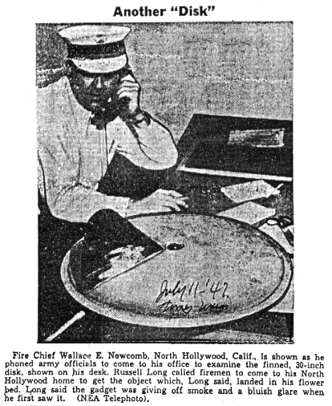

Jokers Take Over "Flying Saucers"
Source: The Cincinnati
[Ohio] Post
Thursday, July
10, 1947 - Page 28
[Snipped excerpt from larger article]
Russell Long, North Hollywood, Cal., construction engineer, found a 25-inch metal disc with radio tubes flashing and smoking in his flower garden and excitedly called the fire department. "It looks like someone went to a great deal of trouble for a joke," said battalion chief Wallace E. Newcombe of the Los Angeles Fire Department.
"Saucer" Found in Hollywood Garden
Source: The [Maysville,
Kentucky] Public Ledger
July 10, 1947
- Page 3
North Hollywood, Calif., July 10
- A saucer-shaped mechanical contraption, resembling a chicken-brooder
top with a few gadgets added, was
found in a geranium bed at the home of
construction engineer Russell Long last night and the first official reaction
was from Fire Battalion Chief
Wallace E. Newcombe, who looked at it skeptically,
and said:
"It doesn't look to me like it could fly."
Long called the Van Nuys fire department
and excitedly pointed to the metal saucer, 30 inches in diameter, which
he said had been belching smoke from two exhaust pipes and emitting a blue-white
glare.
'Genuine Saucer' Looks Like Gag
San Pedro, Cal., July 11 (U.P.) - Army
officers at Fort MacArthur took a look today at the "genuine, radio-controlled,
jet-propelled flying saucer" Russell Long found in his North Hollywood
garden and said it looked "like a gag."
"We don't think it could ever fly," an army spokesman said. "However, we're holding the thing pending instructions from 6th army headquarters."
Long still hoped to collect some of the $3000 offered as rewards for a genuine flying disc, but his chances looked pretty slim. The 10-pound iron disc dropped into his North Hollywood garden two nights ago and knocked a couple of bricks off his house.
Return
to Main Index Page | Unusual
Files | UFO Sighting Database
Reports
and Articles | E-mail Comments or Questions